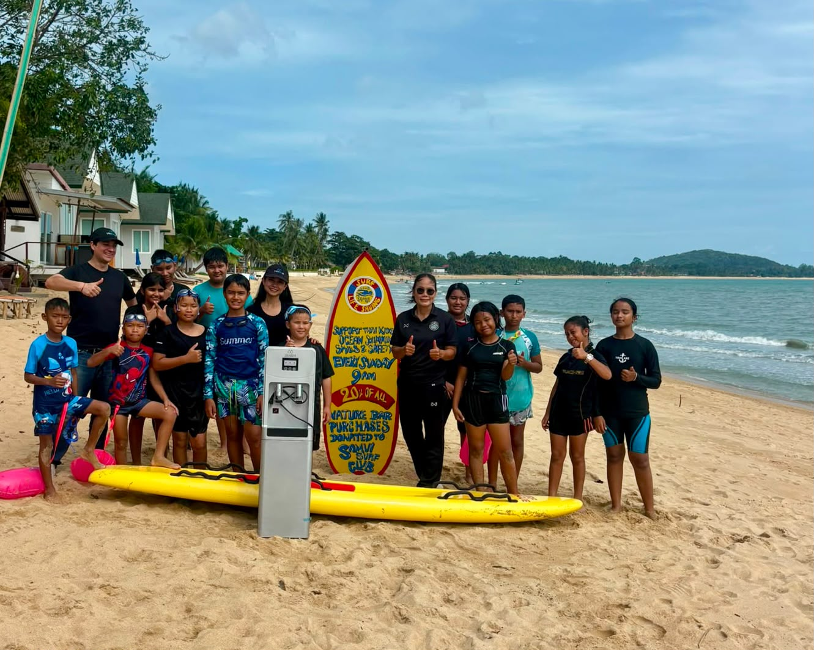

Sunday Beach Sessions
Children and families build ocean confidence through practical beach and water-safety activities.
Saving lives on Koh Samui
What's On
Sunday ocean-safety sessions, beach days, fundraisers and community activities for local children and families.
Children and families build ocean confidence through practical beach and water-safety activities.
Supporter nights, beach days and community fundraisers can be listed here as dates are confirmed.

Venue
Nature Bar is the club's beachside meeting and community venue for sessions, families, fundraisers, sponsors and post-training catchups.
Nature Bar, Mae Nam Beach

Get Involved
Support can come through membership, volunteer time, water-safety help, rescue equipment, training resources or donations.
Support the clubSponsors
Sponsorship opportunities, current sponsor stories and sponsor logo boxes are on the Sponsors page.
Open sponsor page
Life Saving
The club helps local children build swimming confidence, beach awareness and practical rescue skills in a safe, encouraging environment.
Open life saving page

Clubhouse
The Clubhouse page holds the Buy a Brick campaign and future home-base information for members, families and sponsors.
Buy a brick programOur Volunteers
Volunteers help with beach sessions, equipment, event support, water safety and the practical work behind the club.
Meet the volunteers